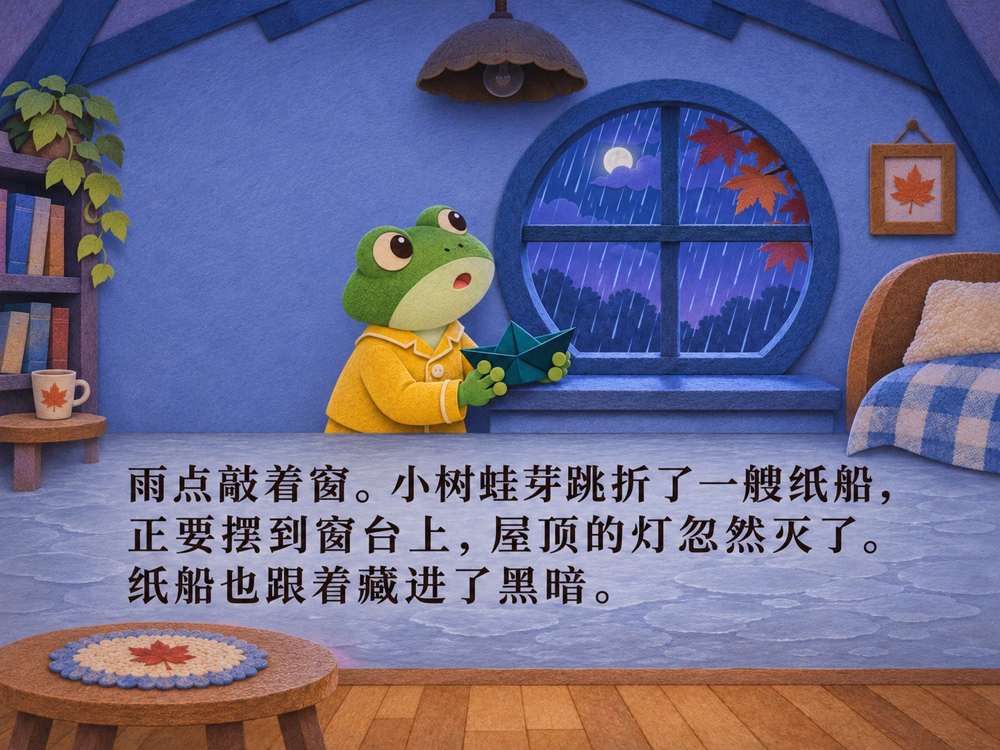

<!doctype html><html lang="zh-CN"><meta charset="utf-8"><meta name="viewport" content="width=device-width, initial-scale=1, viewport-fit=cover"><title>没有插线的小灯</title><style>*{box-sizing:border-box}body{margin:0;background:#243643;color:#faf3df;font:18px system-ui}main{height:100dvh;display:flex;flex-direction:column;align-items:center;justify-content:center;gap:12px;padding:0 8px calc(8vh + env(safe-area-inset-bottom))}img{object-fit:contain;max-width:100%;max-height:calc(100dvh - 8vh - env(safe-area-inset-bottom) - 60px)}nav{display:flex;align-items:center;gap:14px;height:44px;flex-shrink:0}button{border:0;border-radius:8px;min-height:44px;padding:0 13px;background:#f3deb2;color:#243643;font:inherit}button:disabled{opacity:.5}a{color:#f3deb2}</style><main><nav aria-label="绘本阅读"><a href="../">首页</a><button id="prev">上一页</button><span id="count" aria-live="polite"></span><button id="next">下一页</button></nav></main><script>const images=["page-01.webp","page-02.webp","page-03.webp","page-04.webp","page-05.webp","page-06.webp","page-07.webp","page-08.webp","page-09.webp","page-10.webp"],stories=["雨点敲着窗。小树蛙芽跳折了一艘纸船，正要摆到窗台上，屋顶的灯忽然灭了。纸船也跟着藏进了黑暗。","芽跳坐在椅子上，抱住纸船不敢动。“爸爸，所有的灯都没电了吗？”他听见爸爸苔辛走过来的脚步声。","苔辛坐到芽跳旁边。“我在这儿，你先坐稳。”他伸手打开桌上的木盒，从里面摸出一支短短的手电筒。","咔嗒一声，墙上亮起一个圆圆的光斑。芽跳低头看看，手电筒没有连着电线，屋顶那盏灯却还是黑着。","“它怎么还有电？”芽跳问。苔辛说：“它带着自己的电池。电池能给筒里的小灯供电，它不用接墙上的插座。”","苔辛把手电筒朝向空墙，让芽跳试一下按钮。光圆一按就缩了回去，再按一下，又稳稳地停在墙上。","芽跳把纸船抱得松了一点。“我们可以去窗边吗？”苔辛把光照到脚下，两只树蛙一前一后慢慢走过去。","窗外的雨还在下。芽跳把纸船放上窗台，正好照在手电筒的光里。他看着船尖，觉得它像停进了一个小港口。","等雨声轻了，屋顶的灯也亮了起来。芽跳和爸爸一起关上手电，把它放回木盒，盖子没有锁，伸手就能打开。","回到床边，芽跳还看得到窗台上的小船。他对爸爸说：“下次灯灭了，我就坐着叫你。”苔辛拉过小椅子陪他。"];const page=document.querySelector("#page"),prev=document.querySelector("#prev"),next=document.querySelector("#next"),count=document.querySelector("#count");let i=0,start;function show(n){i=Math.min(images.length-1,Math.max(0,n));page.src=images[i];page.alt=stories[i];count.textContent=(i+1)+" / "+images.length;prev.disabled=i===0;next.disabled=i===images.length-1}prev.onclick=()=>show(i-1);next.onclick=()=>show(i+1);document.addEventListener("keydown",e=>{if(e.key==="ArrowRight")show(i+1);if(e.key==="ArrowLeft")show(i-1)});page.addEventListener("touchstart",e=>start=e.changedTouches[0].clientX,{passive:true});page.addEventListener("touchend",e=>{const d=e.changedTouches[0].clientX-start;if(Math.abs(d)>45)show(i+(d<0?1:-1))},{passive:true});show(0)</script></html>